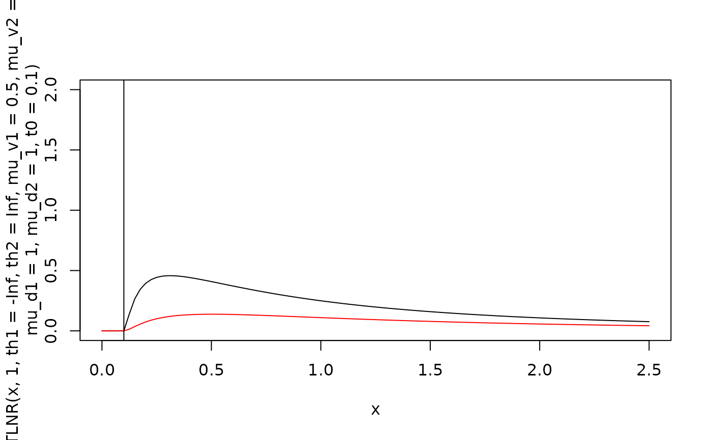
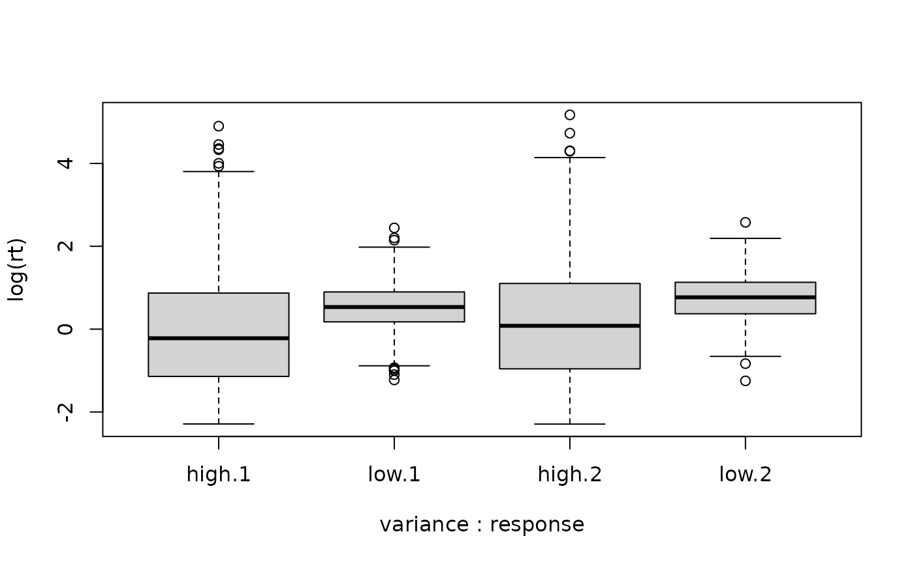
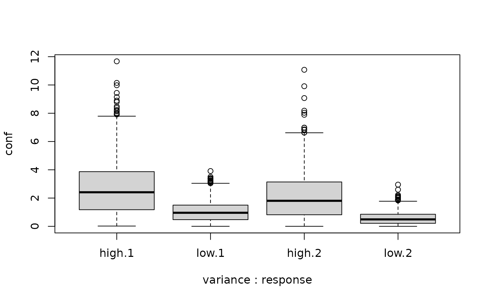
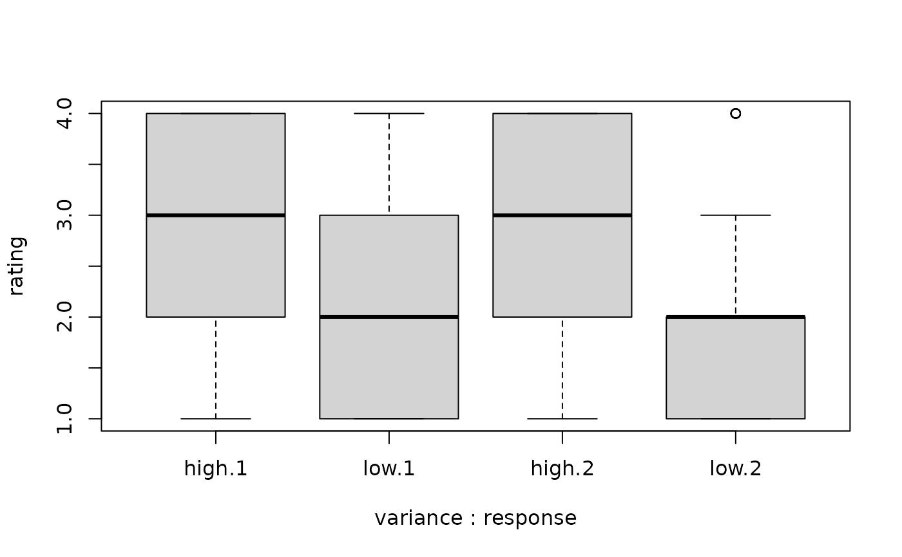
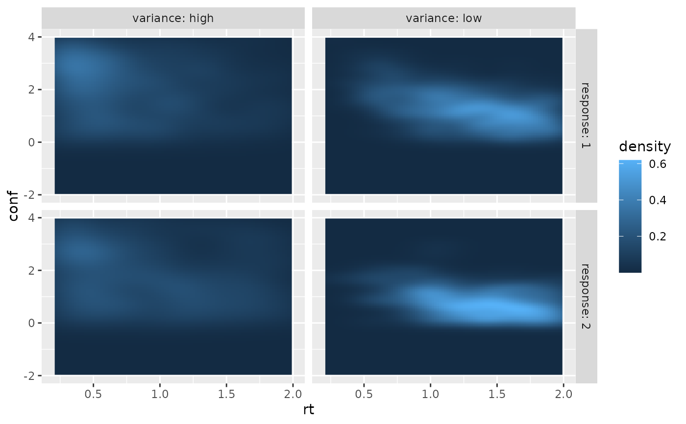

Correlated Multiple-threshold Log-normal Race Model for Decision Confidence
Source:R/dMTLNR.R
MTLNR.RdProbability densities and random number generators for response times,
decisions and confidence judgments in the multi-threshold correlated
log-normal race model (MTLNR; Reynolds et al., 2020),
i.e. the probability of a given response (response: winning accumulator
(1 or 2)) at a given time (rt) and the confidence measure in the interval
between th1 and th2. The confidence measure is defined as the log-ratio between
the time the loosing accumulator would hit its boundary and the decision time
(which means it is in the interval (0, Inf).
The parameters for the model are:
mu_v1/mu_v2 and s_v1/s_v2 the mean and standard deviation
parameters for the log-normally distributed accumulation rates of the two accumulators,
mu_d1/mu_d2 and s_d1/s_d2 the mean and standard deviation
parameters for the log-normally distributed boundary distances of the two accumulators,
rho_v and rho_d the correlation coefficients for the accumulation rates and
the boundary distance, giving the correlation of these parameters between the two accumulators,
t0 and st0 for the minimum and range of uniformly distributed
non-decision times (including encoding and motor time).
Usage
dMTLNR(rt, response = 1, th1, th2, mu_v1, mu_v2, s_v1 = 1, s_v2 = 1,
rho_v = 0, mu_d1 = 0, mu_d2 = 0, s_d1 = 1, s_d2 = 1, rho_d = 0,
t0 = 0, st0 = 0, precision = 6, step_width = NULL)
dMTLNR_multiple_ratings(rt, response = 1, rating = 1, thresholds, mu_v1,
mu_v2, s_v1 = 1, s_v2 = 1, rho_v = 0, mu_d1 = 0, mu_d2 = 0,
s_d1 = 1, s_d2 = 1, rho_d = 0, t0 = 0, st0 = 0, precision = 6,
step_width = NULL)
rMTLNR(n, thresholds = NULL, mu_v1, mu_v2, s_v1 = 1, s_v2 = 1,
rho_v = 0, mu_d1 = 0, mu_d2 = 0, s_d1 = 1, s_d2 = 1, rho_d = 0,
t0 = 0, st0 = 0)Arguments
- rt
a numeric vector of RTs. For convenience also a
data.framewith columnsrtandresponseis possible.- response
numeric vector with values in
c(1, 2), giving the accumulator that hit its boundary first.- th1
numeric. Lower bound of interval range for the confidence measure.
- th2
numeric. Upper bound of interval range for the confidence measure.
- mu_v1
numeric. Mean parameter of log-normally distributed accumulation rate of first accumulator
- mu_v2
numeric. Mean parameter of log-normally distributed accumulation rate of second accumulator
- s_v1
numeric. Standard deviation of log-normally distributed accumulation rate of first accumulator
- s_v2
numeric. Standard deviation of log-normally distributed accumulation rate of second accumulator
- rho_v
numeric. Correlation parameter for accumulation rates
- mu_d1
numeric. Mean parameter of log-normally distributed boundary distance of first accumulator
- mu_d2
numeric. Mean parameter of log-normally distributed boundary distance of second accumulator
- s_d1
numeric. Standard deviation of log-normally distributed boundary distance of first accumulator
- s_d2
numeric. Standard deviation of log-normally distributed boundary distance of second accumulator
- rho_d
numeric. Correlation parameter for boundary distances
- t0
numeric. Lower bound of non-decision time component in observable response times. Range:
t0>=0. Default: 0.- st0
numeric. Range of a uniform distribution for non-decision time. Range:
st0>=0. Default: 0.- precision
numerical scalar value. Precision of calculation. Determines the step size of integration w.r.t.
t0. Represents the number of decimals precisely computed on average. Default is 6.- step_width
numeric. Alternative way to define the precision of integration w.r.t.
t0by directly providing the step size for the integration.- rating
numeric vector with integer values from 1 to the number of confidence levels
- thresholds
numeric vector of length 2*(number of confidence levels). Confidence thresholds, which are used to compare the confidence variable against for producing discrete confidence judgments. The first half of the entries should be increasing and represent the confidence thresholds for a
responseof 1; the second half of the entries should also be increasing and are the thresholds forresponse=2.- n
integer. The number of samples generated.
Value
dMTLNR and dMTLNR_multiple_ratings return the numerical value of the probability density in a numerical vector of the same
length as rt.
rMTLNR returns a data.frame with five columns and n rows. Column names are rt (response
time), response (1 or 2, indicating which accumulator hit its boundary first),
Tdec (the actual decision time (without non-decision time),
conf (the log of the ratio of boundary hitting times (the confidence variable),
and rating (the discrete confidence judgment).
The race parameters (as well as response (and rating), th1,
and th2) are recycled to the length of the result (either rt or n).
In other words, the functions are completely vectorized for all parameters
and even the response.
Details
For the computation of confidence judgments, the parameters for the confidence
thresholds th1 and
th2 for the lower and upper bound of the interval for the confidence
measure, or thresholds for a vector of thresholds (see Details).
The model assumes that each of the two accumulators has a log-normally distributed
boundary distance \(D\) with mean parameter \(\mu_D\) and standard
deviation parameter \(s_D^2\) and a log-normally distributed accumulation rate
\(V\) with respective parameters. The accumulation takes the form of a linear
ballistic accumulation without any noise, such that the boundary crossing times
\(T=D/V\) are log-normally distributed with mean parameter
\(\mu_D - \mu_V\) and variance parameter
\(s_D^2 + s_V^2\).
In addition, the boundary distances for the two accumulators are correlated with
the correlation determined by \(\rho_D\). Similarly, the accumulation
rates share a correlation with parameter \(\rho_V\).
Confidence is determined by the log-ratio of the loosing over the winning boundary
crossing time, i.e., if the first accumulator hit its boundary first, confidence
is determined by
$$conf = log(T_2 / T_1).$$
This confidence measure is then compared to the set of thresholds to produce
discrete confidence judgments.
This is equivalent to a confident computation based on the Balance of Evidence
at decision time, although symmetry conditions for the thresholds may differ
depending on the interpretation (see Reynolds et al., 2020 for more detail).
For convenience, the likelihood function allows that the first argument is a data.frame containing the
information of the first and second argument in the columns
(i.e., rt and response (and rating if relevant)).
Other columns (as well as passing response separately as argument)
will be ignored.
Difference between dMTLNR and dMTLNR_multiple_ratings
The function dMTLNR allows to compute the probability of a rt and response with
the confidence variable being within an interval given by two thresholds, th1
and th2, similar to the definitions of the other density functions
(like ddynaViTE).
The function dMTLNR_multiple_ratings takes a vector for the discrete confidence
judgments, rating, and a vector thresholds, such that the confidence
interval can vary from observation to observation. The correct interval limits
are chosen by the function depending on the entry in rating.
Note
The model is highly over-parametrized because the mean parameters for
the boundary distances and accumulation rates trade off. Similarly, the
variance parameters and correlation parameters trade off. For this reason,
one may only use the first set of parameters for the accumulation rates (mu_v1,...).
References
Reynolds, A., Kvam, P. D., Osth, A. F., & Heathcote, A. (2020). Correlated racing evidence accumulator models. Journal of Mathematical Psychology, 96, 102331. doi: doi: 10.1016/j.jmp.2020.102331
Examples
# Plot rt distribution ignoring confidence
curve(dMTLNR(x, 1, th1=-Inf, th2=Inf, mu_v1=0.5, mu_v2=-0.5,
mu_d1=1, mu_d2=1, t0=0.1), xlim=c(0,2.5), ylim=c(0,2))
curve(dMTLNR(x, 2, th1=-Inf, th2=Inf, mu_v1=0.5, mu_v2=-0.5,
mu_d1=1, mu_d2=1, t0=0.1), col="red", add=TRUE)
# t0 indicates minimal response time possible
abline(v=0.1)

# Generate a random sample
df1 <- rMTLNR(5000, mu_v1=0.2, mu_v2=-0.2, mu_d1=1, mu_d2=1, t0=0.1)
head(df1)
#> rt response Tdec conf rating
#> 1 0.2105721 1 0.1105721 3.3951325 1
#> 2 1.5053815 2 1.4053815 0.3333731 1
#> 3 6.4813095 2 6.3813095 0.1711973 1
#> 4 1.0321934 1 0.9321934 3.4563064 1
#> 5 0.9491074 1 0.8491074 2.1407264 1
#> 6 5.5927345 2 5.4927345 0.1417114 1
# Compute density with rt and response as separate arguments
dMTLNR(seq(0, 2, by =0.4), response=2, th1=0.5, th2=2,
mu_v1=0.2, mu_v2=-0.2, mu_d1=1, mu_d2=1, t0=0.1)
#> [1] 0.00000000 0.07873391 0.08868378 0.07139010 0.05494956 0.04231700
# Compute density with rt and response in data.frame argument
df1 <- subset(df1, response !=0) # drop trials where no accumulation hit its boundary
dMTLNR(df1[1:5,], th1=0, th2=Inf, mu_v1=0.2, mu_v2=-0.2,
mu_d1=1, mu_d2=1, t0=0.1)
#> [1] 0.265892917 0.104694006 0.009066025 0.204206167 0.219291867
# Example with correlation parameters
dMTLNR(df1[1:5,], th1=0, th2=Inf, mu_v1=0.2, mu_v2=-0.2,
mu_d1=1, mu_d2=1, rho_v=0.3, rho_d=0.2, t0=0.1)
#> [1] 0.26097798 0.09526726 0.01024481 0.19507236 0.20910738
# Example with multiple confidence ratings using dMTLNR_multiple_ratings
thresholds <- c(0.5, 1.5, 2.5, # for response=1 (increasing)
0.3, 1.2, 2.0) # for response=2 (increasing)
# Create some sample data with ratings
sample_data <- data.frame(
rt = c(0.8, 1.2, 0.9, 1.5, 1.1),
response = c(1, 2, 1, 2, 1),
rating = c(1, 2, 3, 1, 2)
)
dMTLNR_multiple_ratings(sample_data, thresholds=thresholds,
mu_v1=0.2, mu_v2=-0.2, mu_d1=1, mu_d2=1, t0=0.1)
#> [1] 0.02652695 0.04716810 0.06925008 0.01378401 0.06579082
# Compare RT and confidence distributions for different parameter settings
df_low_var <- rMTLNR(2000, thresholds = thresholds,
mu_v1=0.3, mu_v2=-0.3, mu_d1=1, mu_d2=1,
s_v1=0.5, s_v2=0.5, s_d1=0.5, s_d2=0.5, t0=0.1)
df_high_var <- rMTLNR(2000, thresholds=thresholds,
mu_v1=0.3, mu_v2=-0.3, mu_d1=1, mu_d2=1,
s_v1=1.5, s_v2=1.5, s_d1=1.5, s_d2=1.5, t0=0.1)
two_samples <- rbind(cbind(df_low_var, variance="low"),
cbind(df_high_var, variance="high"))
two_samples <- two_samples[two_samples$response != 0, ]
# Compare RT distributions
boxplot(log(rt) ~ variance + response, data = two_samples)

# Compare confidence distributions
boxplot(conf ~ variance + response, data = two_samples)

boxplot(rating ~ variance + response, data = two_samples)

if (requireNamespace("ggplot2", quietly = TRUE)) {
require(ggplot2)
ggplot(two_samples, aes(x = rt, y = conf)) +
stat_density_2d(aes(fill = after_stat(density)), geom = "raster", contour = FALSE, na.rm=TRUE) +
facet_grid(cols = vars(variance), rows = vars(response),
labeller = "label_both") +
xlim(c(0.2, 2.0)) + ylim(c(-2, 4))
}
#> Loading required package: ggplot2
